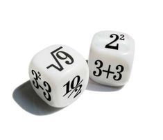

Materi Peluang Kelas 8
Pendahuluan
Peluang adalah salah satu cara untuk menyatakan kemungkinan terjadinya suatu peristiwa. Konsep ini penting untuk memahami kejadian-kejadian yang terjadi secara acak, seperti pelemparan koin, undian, atau hasil dadu.
Pengertian Peluang
Peluang, atau probabilitas, mengukur seberapa besar kemungkinan suatu peristiwa terjadi. Peluang dinyatakan dengan nilai antara 0 hingga 1, di mana 0 berarti peristiwa tersebut tidak mungkin terjadi dan 1 berarti peristiwa tersebut pasti terjadi.
- Peluang = 0: Peristiwa tidak mungkin terjadi.
- Peluang = 1: Peristiwa pasti terjadi.
Rumus Dasar Peluang
Untuk menghitung peluang suatu kejadian, kita dapat menggunakan rumus berikut:
Peluang (P) =
Jumlah Kejadian yang Diharapkan / Jumlah Kejadian yang Mungkin
Keterangan:
- P: Peluang dari suatu peristiwa.
- Jumlah Kejadian yang Diharapkan: Jumlah kejadian yang sesuai dengan yang kita harapkan.
- Jumlah Kejadian yang Mungkin: Total semua kemungkinan hasil yang bisa terjadi.
Konsep Ruang Sampel
Ruang sampel adalah kumpulan semua hasil yang mungkin terjadi dalam suatu percobaan. Misalnya, dalam pelemparan koin, ruang sampel adalah {Gambar, Angka}.
Modul Ajar
Untuk memahami materi tentang peluang secara lebih mendalam, mari kita simak modul ajar yang telah disiapkan di bawah ini. Modul ini akan membantu Anda memahami konsep-konsep penting dan memberikan panduan yang jelas untuk setiap bagian materi. Berikut adalah Modul Ajar mengenai materi peluang:
Video Pembelajaran
Untuk membantu memperdalam pemahaman Anda tentang materi peluang, saya telah menyiapkan video pembelajaran yang akan menjelaskan konsep-konsep penting secara lebih detail. Silakan tonton video di bawah ini, dan jangan ragu untuk mengulangi atau menjeda video jika diperlukan agar Anda dapat memahami setiap bagian dengan lebih baik. Berikut adalah video pembelajaran mengenai materi peluang:
Kesimpulan
Materi peluang mengajarkan kita untuk memahami kemungkinan terjadinya suatu peristiwa dalam suatu percobaan. Peluang digunakan untuk mengukur seberapa besar kemungkinan suatu kejadian akan terjadi, yang dinyatakan dalam bentuk nilai antara 0 dan 1. Nilai 0 berarti peristiwa tersebut tidak mungkin terjadi, sedangkan nilai 1 berarti peristiwa tersebut pasti terjadi.
Dalam materi ini, kita telah belajar konsep dasar peluang, seperti ruang sampel, kejadian, dan cara menghitung peluang dengan menggunakan rumus dasar:
𝑃(𝐴) = jumlah kejadian yang diinginkan / jumlah seluruh kemungkinan kejadian (ruang sampel)
Pemahaman tentang peluang sangat penting dalam kehidupan sehari-hari karena membantu kita membuat keputusan yang lebih baik berdasarkan kemungkinan hasil dari suatu peristiwa, baik dalam permainan, perencanaan, atau pengambilan keputusan lainnya.